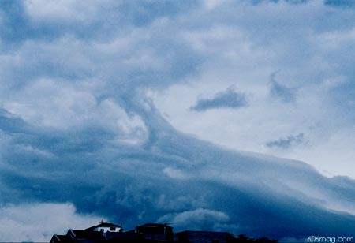

|

here's how it works: we pick a day here in chicago and make note of the weather. our reporters
scour the globe looking for cities with a similar forecast, and then pull an interesting random
fact from that place. It's not a forecast, it's a backcast of useless information. |
|
Fruita, Colorado
Temperature: 43 degrees |
| |
Check your chicken. According to local custom, the citizens of Fruita, Colo. celebrate a headless chicken day every year. Mike the
Headless Chicken made his mark in history when on September 10, 1945, his head was cut off. Decapitation, however, didn't
stop this life; he lived on for another four years without his head. |
Aloha, Oregon
Temperature: 43 degrees |
| |
Another Story of the Never-ending Giant Animals that Pop Up in Podunk Towns: Starting from 182th Avenue, turn onto OR-8, or
Tulatin Valley Highway. Continue approximately 1.5 miles to arrive at 21250 SW 3, Tualatin Valley, and see a giant
anthropomorphic rabbit head atop a human body outside of Harvey Marine. |
Lansing, Michigan
Temperature: 40 degrees |
| |
Midwesterners find yet another use for corn The Lonier's Shady Lodge Farm devised a way to incorporate crop circles and good
old-fashioned fun: a corn maze (maize, get it?). Participants encounter a 10-acre field of corn supposedly in the shape of the
renowned Scarecrow from The Wizard of Oz. World record for escaping from the maze: five minutes. Average: 4.8 hours, if you're
from the boondocks. |
Anywhere, Pennsylvania
Temperature: 40 degrees |
| |
Be careful driving in Pennsylvania. According to state law, "Any motorist who sights a team of horses coming toward him must
pull well off the road, cover his car with a blanket or canvas that blends with the countryside, and let the horses pass. If the horses
appear skittish the motorist must take his car apart, piece by piece, and hide it under the nearest bushes." |
Madrid, Spain
Temperature: 48 degrees |
| |
Death to Death! Warnings on packages of cigarettes are supposed to be a beneficial service, right? Marketers are now providing
the perfect tool for ignorance cigarette wrappers. The new packaging enclosing those harsh health messages come in several
different styles, including hearts, ducks and cannabis leaves, and some even mimic American brands of Marlboro and Camel
packaging with witty "health" warnings imprinted on them. |
backcast: tying chicago to the world through similar past weather experience
Chicago, Illinois, USA. December 15, 2003. Cloudy. 43 degrees Fahrenheit.
|